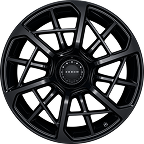
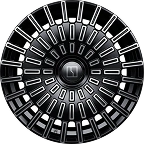
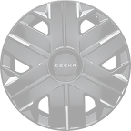

Evolution Car · для ChatGPT Image
Задание на генерацию рендеров Zeekr 9X
Готовые промты, точные параметры из официальных источников и проверка результата. Чтобы нейросеть не придумывала машину из головы.
Главное, что надо понимать до начала. ChatGPT Image не умеет рисовать конкретный автомобиль точно. Он нарисует похожую машину: силуэт угадает, а фары, решётку, рисунок дисков и пропорции переврёт. Для картинки в статью этого хватит. Для конфигуратора, по которому человек выбирает машину за 70 тысяч долларов, – нет: клиент приедет за тем, что видел на сайте.
Поэтому режим №1 ниже – перекраска реального фото, а не рисование с нуля. Так кузов остаётся настоящим, меняется только цвет. Рисование с нуля (режим №2) – только для фона статей и соцсетей, не для каталога.
1Откуда берутся параметры
Всё ниже снято с конфигуратора Zeekr и официальных публикаций 3 ноября 2026. Не выдумано. Эти названия и надо подставлять в промт.
Цвета кузова
| Название | Как описать нейросети | Источник |
|---|---|---|
| Polar Day White | чистый холодный белый, слегка перламутровый | конфигуратор auto-china |
| Polar Night Black | глубокий чёрный с мягким глянцем | конфигуратор auto-china |
| Glacier Silver | светлое холодное серебро с металликом | конфигуратор auto-china |
| Star Dome Gray | тёмно-серый графит, приглушённый | конфигуратор auto-china |
| Dark Night Purple | очень тёмный фиолетовый, почти чёрный на свету | конфигуратор auto-china |
| Wilderness Green | тёмный приглушённый зелёный | китайский запуск, один источник |
| Tan Wild | песочно-бежевый, матовый оттенок | пятиместная версия, июль 2026 |
Отдельно: есть особая версия Black Knight (она же Yaohei Black) – полностью чёрный кузов, затемнённые многоспицевые диски, красные суппорты. Если нужна она, это указывается отдельной строкой в промте, а не просто «чёрный».
Салон
| Название | Как описать |
|---|---|
| Arctic White | белая кожа с серыми вставками |
| Moon Shadow Blue | тёмно-синяя кожа, холодный оттенок |
| Amber Brown | тёплый янтарно-коричневый |
| Glimmering Night Gold | тёмный с золотыми акцентами, за доплату |
Диски – пять рисунков
Это настоящие картинки дисков 9X из конфигуратора, не похожие и не придуманные. Подпись под каждым – готовое описание для промта: вставлять в строку про колёса.

glossy black multi-spoke alloy wheels with thin twin spokes
black turbine-style wheels with many narrow radial slots
dark grey turbine-style wheels with narrow radial slotssilver aerodynamic wheels with large curved cut-outs
light grey closed aero wheel covers with Zeekr letteringГде посмотреть самому: конфигуратор auto-china.com/en/zeekr-9x/config, раздел Wheels. Там же цена европейской версии Hyper Edition – 99 920 €, и допы: одобрение для ЕС 1 500 €, гарантия и обслуживание 5 000 €, доставка 3 500 €, зарядный адаптер 950 €, салон Glimmering Night Gold +6 140 €.
Кузов
- Диски 22 дюйма. Названий у рисунков в открытом доступе нет – поэтому в промте описываем вид словами, как выше.
- Кузов: полноразмерный SUV, шесть мест по схеме 2+2+2 (есть и пятиместная версия).
- Приметы салона для кадров интерьера: два экрана по 16 дюймов спереди, 17-дюймовый экран на потолке для задних пассажиров, проекция на лобовое стекло 47 дюймов.
2Что подать как образец
Без образца нейросеть нарисует «китайский SUV вообще». С образцом – ваш 9X. Прикрепляйте картинку к сообщению в ChatGPT.
- Наше фото из каталога:
evolutioncar.by/img/cars/zeekr-9x.jpg– открыть и сохранить. - Официальные кадры: страница zeekr.eu/models/9x – там анонс модели с фото в высоком качестве.
- Кадры с запуска: статьи carnewschina и gasgoo по запросу «Zeekr 9X launch» – официальные фото производителя.
- Нужен кадр ровно того ракурса, который генерируем: передняя три четверти слева, машина целиком, фон однотонный.
3Промт №1 – перекраска образца
Рабочий режим. Прикрепляете фото 9X, вставляете этот текст, подставив цвет. Повторяете на каждый цвет – кузов остаётся тем же, меняется только краска.
Here is a photo of a Zeekr 9X, a full-size Chinese luxury SUV. Repaint the car in the colour: POLAR DAY WHITE – a clean, cool white with a slight pearl shimmer. Keep absolutely everything else identical to the source photo: - the exact body shape, proportions and stance - headlights, grille, bumpers, door handles, mirrors, roofline and window shapes - the wheel design, tyre size and brake calipers - the camera angle, lens perspective and the position of the car in the frame Output requirements: - studio product shot on a pure white seamless background - soft, even studio lighting, one soft shadow under the car - the whole car visible, nothing cropped at any edge - leave clear empty margin around the car on all four sides, about 5% of the image width - 4:3 aspect ratio, 1440x1080 pixels - no people, no text, no logos other than the car's own, no reflections of a studio Do not redesign any part of the car. This is a repaint, not a new design.
Как менять цвет. Подставляйте название и описание из таблицы выше, строка
Repaint the car in the colour:. Например:
GLACIER SILVER – a light, cool metallic silver.
4Промт №2 – с нуля, без образца
Только для картинок в статьи и соцсети. Для каталога не годится: машина получится похожей, но не настоящей.
A photorealistic studio render of a 2026 Zeekr 9X – a full-size Chinese flagship luxury SUV, six seats in a 2+2+2 layout, built on a 900V platform. Design cues: large upright SUV body with a long bonnet and a square, imposing front end; a slim full-width light bar across the nose; flush door handles; a blacked-out roof; 22-inch multi-spoke alloy wheels; a tall glasshouse with thin chrome window surrounds. Colour: POLAR NIGHT BLACK – deep black with a soft gloss finish. Shot: front three-quarter view from the left, camera at about 1.2 m height, 50 mm lens, the whole vehicle in frame. Setting: pure white seamless studio background, soft even lighting, one soft contact shadow beneath the car. Framing: the entire car visible with clear empty margin on all four sides, about 5% of the image width. 4:3 aspect ratio, 1440x1080 pixels. No people, no text, no watermarks, no other car brands' badges.
5Промт для салона
Интерьер нейросеть врёт сильнее всего – экраны, кнопки и строчку на коже. Используйте только как фон, не как показ реального салона.
A photorealistic interior render of a 2026 Zeekr 9X luxury SUV cabin, seen from the side through the open rear door, showing the front seats and the second row. Interior colour: AMBER BROWN – warm amber-brown leather with darker trim. Details: two 16-inch screens on the dashboard, a 17-inch ceiling screen for rear passengers, a panoramic glass roof, quilted leather seats, six-seat 2+2+2 layout with captain's chairs in the second row. Lighting: soft daylight, no harsh reflections on the screens. Framing: 4:3 aspect ratio, 1440x1080 pixels, the cabin filling the frame. No people, no text on the screens, no brand logos other than Zeekr.
6Что проверить в результате
Нейросеть уверенно выдаёт брак. Прогоните каждую картинку по списку, прежде чем ставить на сайт.
- Четыре колеса, и все одинаковые. Частая ошибка – разный рисунок дисков спереди и сзади.
- Фары и решётка совпадают с образцом. Положите рядом исходное фото и сравните.
- Надпись на машине. Если появилось «ZEEKR» – проверьте побуквенно, нейросеть пишет «ZEKR», «ZEEKA».
- Зазоры и двери. Бывает три двери с одной стороны или дверь без ручки.
- Тень одна и под машиной. Не две, не сбоку.
- Фон чистый белый, без градиентов и пола студии.
- Машина не касается краёв, поля со всех сторон.
- Размер 1440×1080. Если вышло другое – попросите пересохранить, не растягивайте сами.
И самое важное при приёмке. Сгенерированная машина – это не та машина, которую вы привезёте. Если такой кадр стоит в каталоге как фото автомобиля, это обещание, которое вы не сможете сдержать: клиент сверит с реальной машиной и увидит другие фары и другие диски.
Для каталога генерация годится только там, где прямо написано, что это иллюстрация. Настоящие рендеры всех цветов 9X есть у Zeekr – они лежат на китайском сайте, который нам закрыт, и открываются прокси за 5–15 долларов.